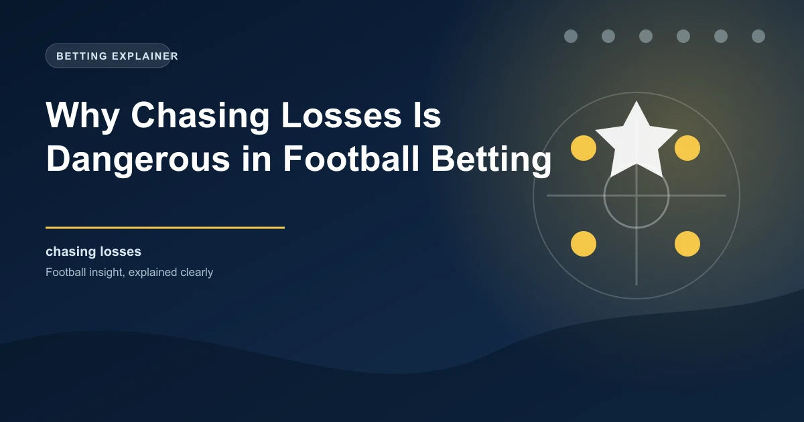

Every football bettor has experienced a losing streak. The frustration of watching carefully selected bets fall short is a universal experience in the betting world. However, how you respond to those losses defines whether you become a successful long-term bettor or someone who destroys their bankroll in a single afternoon. Chasing losses - the compulsion to increase stake sizes or place additional bets to recover previous losses - is the single most destructive behaviour in sports betting. It transforms manageable setbacks into catastrophic financial damage. This article explains the psychology behind loss chasing, presents the statistical evidence for why it fails, and provides practical strategies to break the cycle.
The urge to chase losses is rooted in deep-seated psychological biases that affect every human being, regardless of intelligence or experience. Understanding these biases is the first step toward overcoming them.
Loss aversion, a concept developed by psychologists Daniel Kahneman and Amos Tversky, demonstrates that humans feel the pain of a loss approximately twice as intensely as the pleasure of an equivalent gain. This means losing 100 pounds feels roughly twice as painful as winning 100 pounds feels pleasurable. In betting terms, this means the emotional impact of a losing bet is disproportionately large compared to the satisfaction of a winning bet. This imbalance creates a powerful urge to eliminate the negative feeling by winning back the lost money, which is the fundamental mechanism behind loss chasing.
The sunk cost fallacy is the tendency to continue investing in something because of what you have already invested, rather than based on future value. In betting, this manifests as the belief that you need to keep betting to justify or recover the money you have already lost. The money spent on previous bets is gone regardless of what you do next, but the sunk cost fallacy tricks your brain into treating those losses as debts that must be repaid through further betting.
The gambler's fallacy is the mistaken belief that past events influence future independent outcomes. After a series of losing bets, many bettors feel that a win is "due" or that they are on a "hot streak" of bad luck that must end. In reality, each bet is an independent event with its own probability. The universe does not keep a running tally of your wins and losses, and a losing streak does not make a future win more likely. This fallacy is particularly dangerous because it provides a seemingly rational justification for increased betting after losses.
Imagine you placed a 50 pound bet on Arsenal to win and they lost. The pain of that loss is amplified by loss aversion. You then feel the sunk cost pressure to recover the 50 pounds. Simultaneously, the gambler's fallacy tells you that Arsenal are "due" a win. These three biases combine to create an overwhelming urge to place another, possibly larger, bet on Arsenal in their next match. The rational analysis of whether Arsenal represent value in that next match becomes irrelevant - you are no longer betting on football, you are betting on emotion.
The mathematics of loss chasing are unambiguous: it does not work. Here is why, expressed in concrete terms:
The most common loss chasing strategy is to double your stake after each loss, sometimes called the Martingale system. The logic seems sound: if you double your bet after each loss, when you eventually win, you recover all previous losses plus a profit equal to your original stake. However, this strategy fails for several reasons:
To recover a 100 pound loss with a single bet at odds of 2.0 (evens), you need to stake 100 pounds. If that bet also loses, you now need to win 200 pounds to recover both losses. If you stake 200 at odds of 2.0 and lose again, you need 400 pounds. After just 5 consecutive losses starting from 100 pounds, you would need to stake 1,600 pounds at evens to recover everything. The probability of 5 consecutive losses at evens is approximately 3.1%, which sounds small but happens roughly once every 32 sequences. Over a year of regular betting, these sequences are not rare - they are inevitable.
Research into betting behaviour shows that emotional bets placed after losses have significantly lower expected value than analytically derived bets. This is because emotional bettors:
Each of these behaviours independently reduces your expected return. Combined, they create a catastrophic decline in betting quality that accelerates losses rather than recovering them.
Understanding how loss chasing unfolds in practice helps you recognise it in your own behaviour:
You lose a 20 pound single bet on Manchester City to win. Frustrated, you place a 20 pound accumulator combining City, Liverpool, and Barcelona to win back the loss with a bigger payout. The accumulator loses. Now you are 40 pounds down and feeling desperate. You place a 40 pound four-fold accumulator with even longer odds. This too loses, leaving you 80 pounds down. By now, you are placing bets you would never normally consider on markets you do not understand, purely to try to recover. This is the loss chasing spiral in its purest form.
You lose a pre-match bet on over 2.5 goals. The match is still in play and currently 0-0 at half-time. Instead of accepting the loss, you place an in-play bet on over 1.5 second-half goals at shortened odds. The match ends 0-0. Now you are double-staking on the same poor-value proposition, compounding your losses because you cannot accept that your original analysis was wrong.
The fundamental distinction between profitable and unprofitable bettors lies in their decision-making process. Analytical bettors make decisions based on data, probability, and value assessment. Emotional bettors make decisions based on their current psychological state.
| Characteristic | Analytical Betting | Emotional (Chasing) Betting |
|---|---|---|
| Stake size | Consistent, based on bankroll percentage | Escalating, based on previous losses |
| Selection process | Data-driven, researched | Impulsive, gut-feeling |
| Market choice | Familiar, well-understood | Unfamiliar, desperate |
| Timing | Planned, disciplined | Urgent, reactive |
| Emotional state | Detached, objective | Frustrated, desperate |
| Long-term outcome | Profitable or break-even | Consistently unprofitable |
Breaking free from loss chasing requires deliberate, structured strategies. Here are the most effective approaches:
After any loss, enforce a mandatory waiting period before placing your next bet. A minimum of 2 hours between a loss and your next bet allows the emotional intensity to subside and gives your rational brain time to reassert control. Many successful bettors extend this to 24 hours after a significant loss. During this cooling-off period, resist the urge to check odds, read match previews, or discuss betting on social media. Complete detachment is the goal.
A fixed staking plan removes the temptation to chase losses by making your stake size predetermined and non-negotiable. Whether you use flat staking (same amount on every bet) or proportional staking (percentage of current bankroll), the key is that your stake is determined before you assess the specific bet, not after a loss creates emotional pressure. Document your staking plan and commit to it for a minimum of 100 bets before evaluating whether it needs adjustment.
A bet journal is one of the most powerful tools for preventing loss chasing. Record every bet you place with the following details: date, match, market, stake, odds, reasoning, outcome, and your emotional state at the time of placing the bet. Over time, this journal will reveal patterns in your behaviour, including which situations trigger chasing behaviour. It also creates accountability because writing down "I chased my loss from yesterday" forces you to confront the behaviour honestly.
Before each betting session or day, set a maximum loss limit that you will not exceed regardless of circumstances. If your limit is 50 pounds and you reach it, you stop betting for the day. No exceptions. This hard limit prevents the catastrophic single-session losses that cause the most financial and emotional damage. The limit should be an amount you can genuinely afford to lose without it affecting your daily life, finances, or mental health.
Maintain a dedicated betting bankroll that is completely separate from your everyday finances. This separation creates a psychological boundary that makes it harder to chase losses with money you cannot afford to lose. When your betting bankroll is depleted, you stop. You do not transfer money from your savings account or use your credit card to continue. The physical separation of funds reinforces the mental discipline needed to avoid chasing.
Track your emotional state alongside your bets for one month. Rate your emotional state from 1-10 before placing each bet, where 1 is calm and rational and 10 is highly emotional or frustrated. You will likely find that bets placed at emotional levels above 7 have significantly worse outcomes than bets placed at levels below 4. This data-driven self-awareness is the foundation of breaking the loss chasing habit.
Perhaps the most counterintuitive truth in football betting is that losses are not failures - they are an inherent and unavoidable part of the process. Even the most successful professional bettors lose approximately 45-48% of their bets. They profit because they win at odds that are higher than their true probability suggests, creating positive expected value over time. This means losing is literally built into their business model.
Accepting losses as a normal part of betting fundamentally changes your relationship with them. Instead of viewing a losing bet as something to be avenged, you view it as the cost of doing business - one data point in a large sample that will ultimately prove profitable if your analysis is sound. This shift in perspective is perhaps the single most important mental adjustment any bettor can make.
If you find yourself unable to stop chasing losses despite recognising the pattern, or if your betting is causing financial hardship, relationship problems, or mental health issues, please seek professional help. Organisations like GamCare (0808 8020 133), BeGambleAware, and the National Council on Problem Gambling offer free, confidential support. Responsible gambling is not a weakness - it is a strength that protects you and the people who depend on you.
True betting discipline is not about never losing. It is about maintaining your process regardless of recent results. Here is how to build lasting discipline:
The fact that you are reading this article suggests you are already taking responsible gambling seriously. That awareness is your greatest asset. Every successful bettor has experienced the urge to chase losses - the difference is that they have built systems and habits that prevent the urge from translating into action. Use the strategies in this article to build those systems, and remember that discipline is not about willpower. It is about creating environments and processes that make the right decision the easy decision.
WinFulltime provides data-driven predictions to help you make informed, rational betting decisions.
View Today's PredictionsGet live predictions and in-play tips for matches happening right now.
View In-Play Tips Win
Win